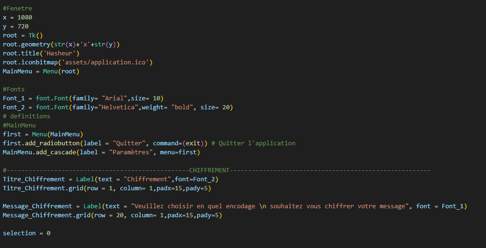

Ce module contient des fonctions et des classes pour le craquage de mots de passe à l'aide d'attaques de dictionnaire, permet également le hachage cryptographique.
Affiche les widgets et permet de chiffrer ou dechiffer un mot de passe grace a une attaque dictionnaire

Fonctions
exit : Ferme l'applicationselect: Recupere la selection de l'utilisateur dans les check box clear : supprime les champs de la zone chiffrement encodage :encode les informations entrer dans le champ et les renvoies Launch_Demo_Dictionnaire : Enchiffre le fichier password.lst puis le déchiffre a par partir de ce meme fichierDemo_Dictionaire : Lance la démo de l'attaque dictionnaireclear_dechiffrement_dictionnaire : Clear le texte des deux consolesDechiffrement_dictionnaire : Tente le dechiffrement du hash mis dans la zone de texte et affiche le resultat en console
Extrait du code tkinter pour l'affichage
